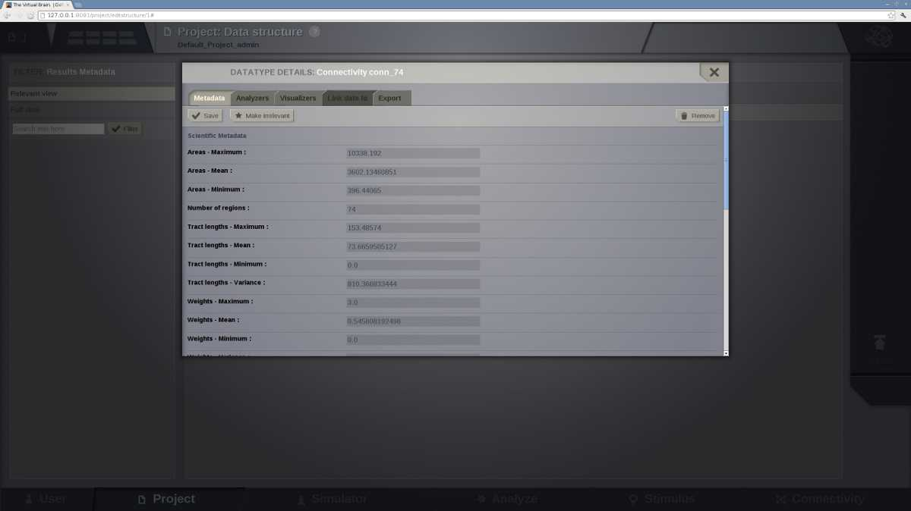

Project
Tip
Projects are the way you organise data and simulations in TheVirtualBrain. They correspond to directories where related data sets and simulation results are stored. Information on the currently selected project is always available by clicking on the upper left corner of the interface:

The main information about the selected project.
The Project tab provides access to the projects that you have created within TheVirtualBrain. The second level menu in the top left corner, next to the Project number, allows you to navigate between five main subpages, each of which is described in more detail in the sections below:
- List of All Projects
- Basic Properties
- Operations
- Data Structure
- Saved Figures

The Project second level menu
List of All Projects
This page provides a list of all the existing projects. Upon first user registration, a default project is created for you:
The default Project
The list of projects includes basic information about each project:
- who owns it
- the number of completed, pending, and failed operations.
as well as providing mechanisms for:
- selecting which project is currently active.
- editing any project's properties
- direct access to Operations and Data Structure pages for any project.
In addition to the list of existing projects, the right hand menu provides a way to:
- Create a new project.
- Import an existing project structure (for example, Exported from a colleague's installation of TheVirtualBrain).
Basic Properties
Enables you to edit the current project's properties, you are also directed to this page when you first create a new project:

The Project Properties page
Note
You can also access this page for any existing project by clicking the edit button near a projects name on the List of all Projects page.
Fill in the form by:
- adding a project's name (without spaces)
- writing a short description about the project.
Tip
If there are other users registered in the framework, you can choose to share the project with them by checking their respective "Visible for" boxes.
On the right side of the browser there is the Action Column from where you can:
- delete the project,
- export the project or,
- save changes.
Clicking on the "X" button takes you back to the List of All Projects page.
If you were creating a new project it should now be visible.
Warning
Project properties cannot be edited while operations are running!
Image Archive
TheVirtualBrain provides you with the possibility of saving image snapshots.
From this page you can manage all the images stored within the current working Project, as well as:
- edit figure title,
- create categories to group your images,
- search through your figure collection,
- visualize, download and delete your images.
Note
Only the current project figures will be available. If you want to visualize images from another project, you will have to switch to that project.

The Image Archive page
Operations
A table with the history of operations related to the currently selected project is displayed. From this board the user can filter, view, reload or cancel any operation:

The operation page with default operations
Data Structure
This page provides a way to navigate through the data associated with the current project, plus Upload capability.
On the most-right area of this page, an upload button appears. This launches an overlay with tabs for each type of TVB-compatible data:

The data upload overlay
Currently the data-types and/or structures supported for upload are:
- CFF connectome format
- Surface GIFTI
- TimeSeries GIFTI
- NIFTI
- RegionMapping
- TVB DataType
- Sensors
- Connectivity (zip)
- Upload Surface (zip)
Launching any uploader with success will generate you a new leaf in the Tree displayed centrally on this page.
The left-most area of the Data Structure page contains basic filters for the centrally displayed entities. We display fixed filters (entities declared relevant / irrelevant) of free-text filtering (when using the input text field and then pressing Button 'Filter'). Filtering based on free-test searches into all fields of an entity, and it is case insensitive.
Data Structure page contains 2 options for viewing in the central area:
a Tree view:

The data structure of the default project -- which automatically loads the default structural data necessary for a simulation.
and a Graph view:
A graph view of the project's data-structure
The main target for the Graph view is to show you in a mixed manner both DataTypes and Operations. The edges that link the Graph are of type: 'Operation generated DataType' and 'DataType is input for Operation'.
When switching from the Tree display to the Graph display, the same node (if DataType) remains selected. This way you could filter entities in the Tree display, check generic meta-data, then switch to the Graph display and see what Operation was parent for this entity.
Selecting a data node in the Tree structure causes an overlay to appear:
A data nodes overlay
From this overlay, the user can:
- edit metadata
- launch Analyzers and Visualizers
- link data to other projects
- export data.
TVB Data Types
Time Series EEG
- A time series associated with a set of EEG sensors.
traits on this class:
- data (Time-series data)
- labels_dimensions (Specific labels for each dimension for the data stored in this timeseries.)
- labels_ordering ()
- length_1d ()
- length_2d ()
- length_3d ()
- length_4d ()
- nr_dimensions (Number of dimension in timeseries)
- sample_period (Sample period)
- sample_period_unit (Sample Period Measure Unit)
- sample_rate (Sample rate)
- sensors ()
- start_time (Start Time:)
- time (Time-series time)
- title ()
Principal Components
Result of a Principal Component Analysis (PCA).
traits on this class:
- component_time_series (Component time series)
- fractions (Fraction explained)
- norm_source (Normalised source time series)
- normalised_component_time_series (Normalised component time series)
- source (Source time-series)
- weights (Principal vectors)
DataType Measure
Class to hold the metric for a previous stored DataType. E.g. Measure (single value) for any TimeSeries resulted in a group of Simulations
traits on this class:
- analyzed_datatype ()
- metrics ()
Brain Skull
A surface defining the boundary between the brain and the skull.
traits on this class:
- geodesic_distance_matrix (Geodesic distance matrix)
- number_of_split_slices ()
- number_of_triangles (Number of triangles)
- number_of_vertices (Number of vertices)
- split_triangles ()
- split_triangles_indices ()
- surface_type ()
- triangle_normals (Triangle normal vectors)
- triangles (Triangles)
- vertex_normals (Vertex normal vectors)
- vertices (Vertex positions)
- zero_based_triangles ()
Skull Skin
A surface defining the boundary between the skull and the skin.
traits on this class:
- geodesic_distance_matrix (Geodesic distance matrix)
- number_of_split_slices ()
- number_of_triangles (Number of triangles)
- number_of_vertices (Number of vertices)
- split_triangles ()
- split_triangles_indices ()
- surface_type ()
- triangle_normals (Triangle normal vectors)
- triangles (Triangles)
- vertex_normals (Vertex normal vectors)
- vertices (Vertex positions)
- zero_based_triangles ()
Wavelet Coefficient
This class bundles all the elements of a Wavelet Analysis into a single object, including the input TimeSeries datatype and the output results as arrays (FloatArray)
traits on this class:
- aggregation_functions ()
- amplitude (Amplitude)
- array_data ()
- dimensions_labels ()
- frequencies (Frequencies)
- label_x ()
- label_y ()
- length_1d ()
- length_2d ()
- length_3d ()
- length_4d ()
- mother (Mother wavelet)
- normalisation (Normalisation type)
- nr_dimensions ()
- phase (Phase)
- power (Power)
- q_ratio (Q-ratio)
- sample_period (Sample period)
- source (Source time-series)
- title ()
Time Series
Base time-series dataType.
traits on this class:
- data (Time-series data)
- labels_dimensions (Specific labels for each dimension for the data stored in this timeseries.)
- labels_ordering (Dimension Names)
- length_1d ()
- length_2d ()
- length_3d ()
- length_4d ()
- nr_dimensions (Number of dimension in timeseries)
- sample_period (Sample period)
- sample_period_unit (Sample Period Measure Unit)
- sample_rate (Sample rate)
- start_time (Start Time:)
- time (Time-series time)
- title ()
Connectivity
This class primarily exists to bundle the long range structural connectivity data into a single object.
traits on this class:
- areas (Area of regions)
- centres (Region centres)
- cortical (Cortical)
- delays (Conduction delay)
- hemispheres (Hemispheres (True for Right and False for Left Hemisphere)
- idelays (Conduction delay indices)
- nose_correction ()
- number_of_regions (Number of regions)
- orientations (Average region orientation)
- parcellation_mask (Parcellation mask (volume))
- parent_connectivity ()
- region_labels (Region labels)
- saved_selection ()
- speed (Conduction speed)
- tract_lengths (Tract lengths)
- unidirectional ()
- weights (Connection strengths)
Coherence Spectrum
Result of a NodeCoherence Analysis.
traits on this class:
- aggregation_functions ()
- array_data ()
- dimensions_labels ()
- frequency (Frequency)
- label_x ()
- label_y ()
- length_1d ()
- length_2d ()
- length_3d ()
- length_4d ()
- nfft (Data-points per block)
- nr_dimensions ()
- source (Source time-series)
- title ()
Volume
Data having voxels as their elementary units.
traits on this class:
- origin (Volume origin coordinates)
- voxel_size (Voxel size)
- voxel_unit (Voxel Measure Unit)
Fourier Spectrum
Result of a Fourier Analysis.
traits on this class:
- aggregation_functions ()
- amplitude (Amplitude)
- array_data ()
- average_power (Average Power)
- dimensions_labels ()
- label_x ()
- label_y ()
- length_1d ()
- length_2d ()
- length_3d ()
- length_4d ()
- normalised_average_power (Normalised Power)
- nr_dimensions ()
- phase (Phase)
- power (Power)
- segment_length (Segment length)
- source (Source time-series)
- title ()
- windowing_function (Windowing function)
Stimuli Region
A class that bundles the temporal profile of the stimulus, together with the list of scaling weights of the regions where it will applied.
traits on this class:
- connectivity (Connectivity)
- spatial (Spatial Equation)
- temporal (Temporal Equation)
- weight (scaling)
Cortex
Extends the CorticalSurface class to add specific attributes of the cortex, such as, local connectivity...
traits on this class:
- coupling_strength (Local coupling strength)
- eeg_projection (EEG projection)
- geodesic_distance_matrix (Geodesic distance matrix)
- internal_projection (Internal projection)
- local_connectivity (Local Connectivity)
- meg_projection (MEG projection)
- number_of_split_slices ()
- number_of_triangles (Number of triangles)
- number_of_vertices (Number of vertices)
- region_mapping_data (region mapping)
- split_triangles ()
- split_triangles_indices ()
- surface_type ()
- triangle_normals (Triangle normal vectors)
- triangles (Triangles)
- vertex_normals (Vertex normal vectors)
- vertices (Vertex positions)
- zero_based_triangles ()
Covariance
Result of a Covariance Analysis.
traits on this class:
- aggregation_functions ()
- array_data ()
- dimensions_labels ()
- label_x ()
- label_y ()
- length_1d ()
- length_2d ()
- length_3d ()
- length_4d ()
- nr_dimensions ()
- source (Source time-series)
- title ()
Independent Components
Result of TEMPORAL (Fast) Independent Component Analysis
traits on this class:
- component_time_series (Component time series. Unmixed sources.)
- mixing_matrix (Mixing matrix - Spatial Maps)
- n_components (Number of independent components)
- norm_source (Normalised source time series. Zero centered and whitened.)
- normalised_component_time_series (Normalised component time series)
- prewhitening_matrix (Pre-whitening matrix)
- source (Source time-series)
- unmixing_matrix (Unmixing matrix - Spatial maps)
Connectivity Measure
An array representing a measure of a Connectivity dataType.
traits on this class:
- aggregation_functions ()
- array_data ()
- connectivity ()
- dimensions_labels ()
- label_x ()
- label_y ()
- length_1d ()
- length_2d ()
- length_3d ()
- length_4d ()
- nr_dimensions ()
- title ()
MappedArray
Array that will be Mapped as a table in DB.
traits on this class:
- aggregation_functions ()
- array_data ()
- dimensions_labels ()
- label_x ()
- label_y ()
- length_1d ()
- length_2d ()
- length_3d ()
- length_4d ()
- nr_dimensions ()
- title ()
Single Value
Class to wrap a singular value storage in DB.
traits on this class:
- data_name ()
- data_type ()
- data_value ()
Stimuli Surface
A spatio-temporal pattern defined in a Surface DataType. It includes the list of focal points.
traits on this class:
- focal_points_surface (Focal points)
- focal_points_triangles (Focal points triangles)
- spatial (Spatial Equation)
- surface (Surface)
- temporal (Temporal Equation)
Projection Region to EEG
Specific projection, from a Connectivity Regions to EEG Sensors,
traits on this class:
- projection_data (Projection Matrix Data)
- sensors ()
- sources ()
Cortical Surface
A surface for describing the Brain Cortical area.
traits on this class:
- geodesic_distance_matrix (Geodesic distance matrix)
- number_of_split_slices ()
- number_of_triangles (Number of triangles)
- number_of_vertices (Number of vertices)
- split_triangles ()
- split_triangles_indices ()
- surface_type ()
- triangle_normals (Triangle normal vectors)
- triangles (Triangles)
- vertex_normals (Vertex normal vectors)
- vertices (Vertex positions)
- zero_based_triangles ()
Skin Air
A surface defining the boundary between the skin and the air.
traits on this class:
- geodesic_distance_matrix (Geodesic distance matrix)
- number_of_split_slices ()
- number_of_triangles (Number of triangles)
- number_of_vertices (Number of vertices)
- split_triangles ()
- split_triangles_indices ()
- surface_type ()
- triangle_normals (Triangle normal vectors)
- triangles (Triangles)
- vertex_normals (Vertex normal vectors)
- vertices (Vertex positions)
- zero_based_triangles ()
Time Series Volume
- A time-series associated with a Volume.
traits on this class:
- data (Time-series data)
- labels_dimensions (Specific labels for each dimension for the data stored in this timeseries.)
- labels_ordering ()
- length_1d ()
- length_2d ()
- length_3d ()
- length_4d ()
- nr_dimensions (Number of dimension in timeseries)
- sample_period (Sample period)
- sample_period_unit (Sample Period Measure Unit)
- sample_rate (Sample rate)
- start_time (Start Time:)
- time (Time-series time)
- title ()
- volume ()
Nerf Lookup Table
This class brings together the scientific and framework methods that are associated with the NerfTable dataType.
NerfTableData | / \ NerfTableFramework NerfTableScientific \ / | NerfTabletraits on this class:
- data (data)
- df (df)
- dx (dx)
- equation (String representation of the precalculated function)
- invdx (invdx)
- number_of_values (Number of values)
- xmax (x-max)
- xmin (x-min)
Surface
This class primarily exists to bundle the structural Surface data into a single object.
traits on this class:
- geodesic_distance_matrix (Geodesic distance matrix)
- number_of_split_slices ()
- number_of_triangles (Number of triangles)
- number_of_vertices (Number of vertices)
- split_triangles ()
- split_triangles_indices ()
- surface_type ()
- triangle_normals (Triangle normal vectors)
- triangles (Triangles)
- vertex_normals (Vertex normal vectors)
- vertices (Vertex positions)
- zero_based_triangles ()
Time Series Region
- A time-series associated with the regions of a connectivity.
traits on this class:
- connectivity ()
- data (Time-series data)
- labels_dimensions (Specific labels for each dimension for the data stored in this timeseries.)
- labels_ordering ()
- length_1d ()
- length_2d ()
- length_3d ()
- length_4d ()
- nr_dimensions (Number of dimension in timeseries)
- sample_period (Sample period)
- sample_period_unit (Sample Period Measure Unit)
- sample_rate (Sample rate)
- start_time (Start Time:)
- time (Time-series time)
- title ()
Sensors Internal
Sensors inside the brain...
traits on this class:
- has_orientation ()
- labels (Sensor labels)
- locations (Sensor locations)
- number_of_sensors (Number of sensors)
- orientations ()
- sensors_type ()
Local Connectivity
A sparse matrix for representing the local connectivity within the Cortex.
traits on this class:
- cutoff (Cutoff distance (mm))
- equation (Spatial)
- matrix ()
- surface (Surface)
Time Series MEG
- A time series associated with a set of MEG sensors.
traits on this class:
- data (Time-series data)
- labels_dimensions (Specific labels for each dimension for the data stored in this timeseries.)
- labels_ordering ()
- length_1d ()
- length_2d ()
- length_3d ()
- length_4d ()
- nr_dimensions (Number of dimension in timeseries)
- sample_period (Sample period)
- sample_period_unit (Sample Period Measure Unit)
- sample_rate (Sample rate)
- sensors ()
- start_time (Start Time:)
- time (Time-series time)
- title ()
Sensors MEG
These are actually just SQUIDS. Axial or planar gradiometers are achieved by calculating lead fields for two sets of sensors and then subtracting...
position orientation | | / \ / \ / \ / \ file columns: labels, x, y, z, dx, dy, dztraits on this class:
- has_orientation ()
- labels (Sensor labels)
- locations (Sensor locations)
- number_of_sensors (Number of sensors)
- orientations (Sensor orientations)
- sensors_type ()
Cross Correlation
Result of a CrossCorrelation Analysis.
traits on this class:
- array_data ()
- labels_ordering (Dimension Names)
- source (Source time-series)
- time (Temporal Offsets)
Simulation State
Simulation State, prepared for H5 file storage.
traits on this class:
- current_step ()
- history ()
- monitor_stock_1 ()
- monitor_stock_10 ()
- monitor_stock_11 ()
- monitor_stock_12 ()
- monitor_stock_13 ()
- monitor_stock_14 ()
- monitor_stock_15 ()
- monitor_stock_2 ()
- monitor_stock_3 ()
- monitor_stock_4 ()
- monitor_stock_5 ()
- monitor_stock_6 ()
- monitor_stock_7 ()
- monitor_stock_8 ()
- monitor_stock_9 ()
Time Series Surface
- A time-series associated with a Surface.
traits on this class:
- data (Time-series data)
- labels_dimensions (Specific labels for each dimension for the data stored in this timeseries.)
- labels_ordering ()
- length_1d ()
- length_2d ()
- length_3d ()
- length_4d ()
- nr_dimensions (Number of dimension in timeseries)
- sample_period (Sample period)
- sample_period_unit (Sample Period Measure Unit)
- sample_rate (Sample rate)
- start_time (Start Time:)
- surface ()
- time (Time-series time)
- title ()
Psi Lookup Table
This class brings together the scientific and framework methods that are associated with the PsiTable dataType.
PsiTableData | / \ PsiTableFramework PsiTableScientific \ / | PsiTabletraits on this class:
- data (data)
- df (df)
- dx (dx)
- equation (String representation of the precalculated function)
- invdx (invdx)
- number_of_values (Number of values)
- xmax (x-max)
- xmin (x-min)
Sensors EEG
EEG sensor locations are represented as unit vectors, these need to be combined with a head(outer-skin) surface to obtain actual sensor locations
position | / \ / \ file columns: labels, x, y, ztraits on this class:
- has_orientation ()
- labels (Sensor labels)
- locations (Sensor locations)
- number_of_sensors (Number of sensors)
- orientations ()
- sensors_type ()
Region Mapping
An array representing a measure of a Connectivity dataType.
traits on this class:
- aggregation_functions ()
- array_data ()
- connectivity ()
- dimensions_labels ()
- label_x ()
- label_y ()
- length_1d ()
- length_2d ()
- length_3d ()
- length_4d ()
- nr_dimensions ()
- surface ()
- title ()
Projection Surface to EEG
Specific projection, from a CorticalSurface to EEG sensors.
traits on this class:
- brain_skull (Brain Skull)
- conductances (Domain conductances)
- projection_data (Projection Matrix Data)
- sensors ()
- skin_air (Skin Air)
- skull_skin (Skull Skin)
- sources ()
Simple Visualizers
Brain Activity Visualizer
A 3D scene of the brain activity:
- at the region level: the brain is represented by a coarse granularity - each region is represented with only one color.

Preview for Brain Activity Visualizer at the region level
- at the surface level: the brain is represented by a fine granularity - each surface vertex has an individual measure.
Time Series Visualizer (svg/d3)

Preview for Time-Series Visualizer (svg/d3)
EEG Time Series Visualizer

Preview for EEG Time Series Visualizer
If you used an EEG monitor to record the activity of your large-scale brain simulation, this display allows you to select the channels of the 62-sensors EEG recording.

Selecting the "channels" to be displayed.
Dual Brain - EEG Visualizer
Preview for EEG Time Series Visualizer
This visualizer combines the brain activity on top of a 3D display of the pacient's head and on the right column, the EEG channels recordings. Channel selection is also available.

Brain activity wit EEG recordings.
Dual Brain - sEEG Visualizer
This visualizer combines the brain activity on top of a 3D display of the pacient's head and on the right column, the sEEG (Stereo EEG) channels recordings. Channel selection is also available.

Brain activity wit sEEG recordings.
Connectivity Measure Visualizer
This visualizer can be used for displaying various Brain Connectivity Measures, related to a given Connectivity.
On the X axis, we will see the Connectivity nodes listed, and for each of them, we see the computed measure on the Y axis.

Connectivity Measure Visualizer.
Topographic Visualizer
This visualizer can be used for displaying various Brain Connectivity Measures, related to a given Connectivity. Its input is same as for the previous visualizer (Connectivity Measure Visualizer), but the display is completely different. Instead of a discrete view, this time, we can have a continous display (with gradients).

Preview for Topographic Visualizer
Group Display
Discrete PSE Visualizer
Discrete Parameter Space Exploration View, will show up to two measures of the Simulator results, after varying input Simulator Parameters. The two displayed measures are emphasized in the node shapes and node colors.
When running a range of Simulations in TVB, it is possible to do it by varying up to 2 input parameters (displayed on the X and Y axis of current viewer).This visualizer supports to display results when the resulting space is not bigger than 200 points.
Preview for Discrete PSE Visualizer, when varying two input parameters of the simulator
When moving with your mouse cursor over a graph node, you will see a few details about that particular simulation result. When clicking a node, an overlay window will open, which gives you full access to view or further analyze that particular Simulation result.
Isocline PSE Visualizer
Continuous Parameter Space Exploration View, will show the effect of varying Simulator parameters in a continuous form.
When running a range of Simulations in TVB, it is possible to do it by varying up to 2 input parameters (displayed on the X and Y axis of current viewer). This visualizer supports ranges with 2 dimensions only, it does not support ranges with only one dimension. Also both varying dimensions need to be numeric parameters (no DataType ranges are supported for display in this visualizer).

Preview for Continuous PSE Visualizer, when varying two numeric input parameters of the simulator
Controls for scaling or zooming the graph are available in this viewer. When you click on the coloured area, an overlay window will open, containing possibility to view or further analyze the simulation result closest to the point where you clicked.
Analyzers + Visualizers
Covariance Visualizer
Displays the covariance matrix. The matrix size is number of nodes x number of nodes

Preview for Covariance Visualizer
Cross Coherence Visualizer
Displays the cross-coherence matrix. Axes represent brain nodes. The matrix size is number of nodes x number of nodes.

Preview for Cross Coherence Visualizer
Complex Coherence Visualizer
Displays the complex-cross-coherence matrix. Axes represent brain nodes. The matrix is a complex ndarray that contains the number of nodes x number of nodes cross spectrum for every frequency frequency and for every segment
This visualizer is very similar with the previous one (Cross Coherence Visualizer).

Preview for Complex Coherence Visualizer
Cross Correlation Visualizer
Displays the cross-correlation matrix. Similar to the previous three visualizers.
Pearson Coefficients Visualizer
Displays the Pearson correlation coefficients matrix. Similar to the previous four visualizers.
Fourier Spectrum Visualizer
Plots the power spectrum of each node time-series.

Preview for Fourier Spectrum Visualizer
Principal Component Visualizer
On the left, the ring plot displays the fraction of the variance that is explained by each component.
On the right, the first ten components are plotted against the brain nodes (variables).

Preview for Principal Components Analysis Visualizer
Independent Component Visualizer
ICA takes time-points as observations and nodes as variables.
As for PCA the TimeSeries datatype must be longer (more time-points) than the number of nodes. Mostly a problem for TimeSeriesSurface datatypes, which, if sampled at 1024Hz, would need to be greater than 16 seconds long.

Preview for Independent Components Analysis Visualizer
Wavelet Spectrogram Visualizer
2D representation that shows how the signals wavelet spectral coefficients (frequency) vary with time.

Preview for Wavelet Visualizer